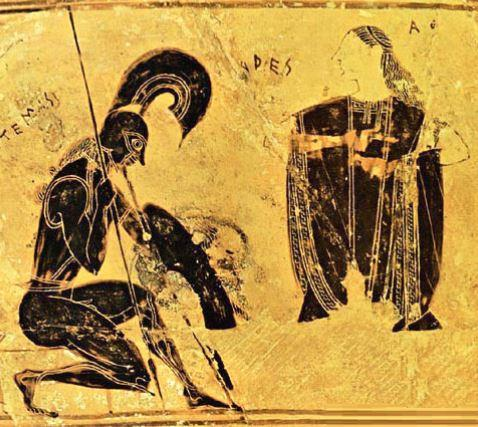

Les anciens romains avaient dédié cette période à Mars, leur dieu de la guerre, car le dégel y libérait aussi souvent les armées en campagne.
Cette année le 18 mars verra la plus que probable réélection de Vladimir Poutine à la barre d'une Russie confrontée à l'une des plus terribles tempêtes de son Histoire depuis la seconde guerre mondiale.
La manifestation organisée à Moscou par l'opposition pro occidentale cristallisée autour du mafieux Navalny est un échec cuisant mais les tentatives ridicules et désespérées des médias occidentaux de gonfler son effectif des 4000 personnes à 500 000 voire 1 million montre que le système totalitaire mondialiste est à bout et prêt comme tout monstre qui se noie à faire les plus grosses vagues de son existence.
Si le président Poutine côté scrutin présidentiel peut dormir sur ses deux oreilles en revanche il doit garder un œil ouvert car les vipères occidentales sont toujours aux portes de la Russie et soufflent fort notamment en Ukraine où sont observés de nombreux indicateurs d'une prochaine offensive dans le Donbass.
Le conseiller spécial US pour l'Ukraine, Kurt Volker, a rencontré Porochenko lors d'une réunion qui ressemble plus à une planification d'un État-major militaire qu'à une réunion diplomatique sur fond d'accords de paix. Au menu : le fantasme de l'invasion russe, la réalité des importations d'armes étasuniennes, et le délire de la récupération par la force des territoires délires Donetsk et Lugansk.
Ce que veulent des amerloks et les ukrops c'est un remake de l'opération « Storm » lancée contre la République serbe de la Krajina.
Les objectifs d’une nouvelle offensive dans le Donbass seraient multiples : militaire, économique, politique pour une Ukraine exsangue dont cette guerre, malgré qu'elle serve de prétexte justifiant échecs et totalitarisme, est devenue au fil des mois une hémorragie économique et morale mortelle pour le régime. Mais surtout une relance de la guerre offrirait aux américains l'occasion, après leur débandade syrienne, d'ouvrir un deuxième front contre la stratégie défensive russe gagnante et de tenter de déstabiliser la politique étrangère du Kremlin au moment des élections présidentielles de mars.
En cas d'offensive ukrainienne, il est peu probable que Moscou intervienne avec son armée dans les 48 heures, sa diplomatie engageant toujours préalablement la procédure diplomatique avant celles des armes d'autant plus si c'est pendant une campagne présidentielle qui sera sous haute surveillance médiatique.
Le Donbass devra donc probablement encaisser le choc initial seul avant que ses forces ne soient secourues d'abord par une nouvelle vague de volontaires qui se prépare déjà derrière les frontières, puis par les forces russes si les opérations tournent au massacre de la population civile.
L'Ukraine de son côté, en tenant compte de ces réactions différées mais aussi et surtout de ses capacités opérationnelles et morales encore très faibles, ne peut que miser sur une offensive éclair, sorte de « blitzkrieg » dont l'objectif sera probablement d'atteindre le plus vite possible les postes frontières des Républiques pour isoler leurs bastions et présenter comme fait accompli le contrôle par Kiev de la frontière (prévu dans la fin de processus de paix).
Pour cela Les forces ukrainiennes devront :
1 / Fixer les réserves des forces républicaines en réalisant une pression offensive globale sur les secteurs sensibles du front proches des centres névralgiques de Donetsk et Lugansk,
2 / Déborder dans un secteur faiblement urbanisé et propice à des déploiements offensif de blindés avec appuis artillerie et aviation.
3 / Attaquer soit vers la frontière ou au pire vers un objectif secondaire proche du front (comme Debalsevo ou Dokuchaïevsk par exemple qui sont des zones républicaines contestées par Kiev à Minsk).
Si l'offensive dure plusieurs semaines Kiev sera réellement « dans la merde » car confrontée à :
- Un effondrement de sa chaîne logistique et sanitaire (il y a déjà des carences de médicaments et des hôpitaux saturés) et de sa chaîne de commandement.
- Une vague massive de désertions de soldats qui ne veulent pas mourir dans cette guerre civile et probablement des contestations violentes anti guerre à Kiev.
- Une nouvelle arrivée de volontaires pro-russes (cosaques etc) aguerris et hyper motivés qui sont déjà organisés avec un équipement qui les attend.
- Et vraisemblablement s'il y a des pertes civiles importantes, le soutien occidental au régime de Kiev risque de se fissurer, notamment du côté de la France et l'Allemagne qui sont garants des accords de paix.
Mais les USA veulent cette guerre et ce quel qu'en soit le prix (surtout si c'est les européens qui paient !) L'OTAN est là pour payer la facture de la folie de cette ploutocratie qui veut sauver son économie moribonde par une économie de guerre et une perfusion de sang.
Porochenko vient d'ailleurs de signer un décret autorisant des armées étrangères affidées à l'OTAN à pouvoir opérer en Ukraine.
Bref, tout converge vers cette offensive que nous attendons depuis plus de 2 ans, et il ne manquait que le moment opportun pour la déclencher.
Les élections russes semblent aujourd’hui être une fenêtre de tir idéale pour les occidentaux (tout comme les JO de Sotchi le furent pour déclencher le Maïdan).
Car ce Nouvel Ordre Mondial aux abois est littéralement enragé et décidé à saboter le processus électoral qui maintiendra Poutine au pouvoir et sa stratégie qui détruit pièce par pièce l'hégémonie mondialiste.
Les USA par l'intermédiaire de l’Ukraine veulent entraîner la Russie en cherchant à la responsabiliser vers une guerre qui apparaît aujourd'hui plus en plus inévitable...
Partager cette page